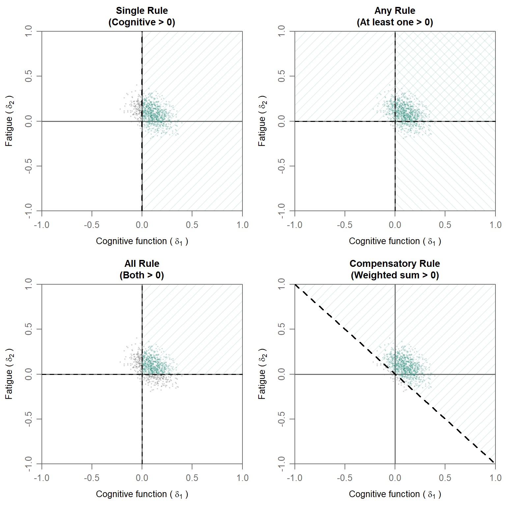
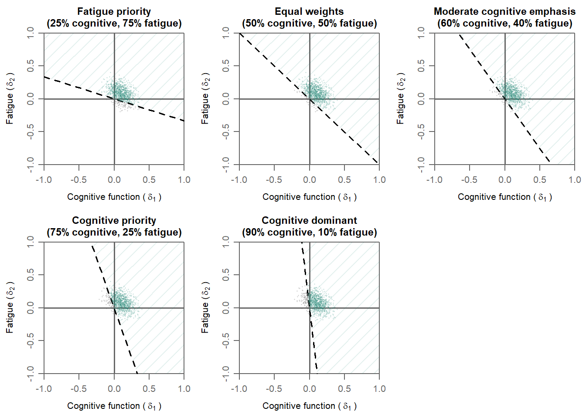

Imagine you’re evaluating a new cancer treatment. It reduces tumor size in most patients, but some experience severe side effects. How do you decide if the treatment is “better” than the standard?
This is the fundamental challenge of clinical trials with multiple outcomes. We rarely care about just one thing. We want efficacy and safety, symptom relief and quality of life. But how do we combine these into a single decision?
The traditional approaches — select a primary outcome or test each outcome separately — have problems. They ignore other information and they ignore the fact that outcomes are often correlated. If a treatment is more agressive, it might treat the disease better, but might result in more side effects as well. That is information you usually want to weigh in your decision to adopt a new treatment.
The most commonly used multivariate alternatives force an artificial choice: demand improvement on all outcomes or on any outcome. The former might be too strict for some situations, whereas the latter might be too lenient. We might be happy if the treatment is better in symptom reduction, as long as side effects are comparable or not too bad. Or if side effects are lower with similar effectivity. In those cases, we don’t need symptom reduction AND side effect reduction. Neither do we accept a small symptom reduction if side effects increase dramatically.
In recent years, attention has been paid to a principled alternative: more flexible decision rules that let us define what “success” actually means in our clinical context. Usually, these boil down to weighing outcomes. Several variations of such weighted (usually linear) combinations have been proposed. Under this blog, you can find several references. In the current blog, I will give an intuition of such weighted linear combinations without diving into the detailed differences between such methods. Below is also a Bayesian implementation in R for the situation with two binary outcome variables.
Four decision rules visualized
Let me show you the core insight using a simple two-outcome example. Imagine we’re testing a treatment that targets:
- Cognitive function (outcome 1)
- Fatigue (outcome 2)
Each outcome has a treatment effect: the difference in success probability between the new treatment and control, \(\delta_1\) and \(\delta_2\).
The four rules discussed here are:
1. Single Rule: improvement on prespecified (“primary”) outcome
- Tests if cognitive function improves: \(\delta_1 > 0\)
- Ignores fatigue completely, so fatigue can have any positive or negative effect
- When to use: When you have one clear primary outcome
2. Any Rule: improvement on one of the outcomes
- Tests if at least one outcome improves: \(\delta_1 > 0\) OR \(\delta_2 > 0\)
- Consists of two decision regions
- Most liberal: accepts marginal improvements, even when the other outcome has a large decline
- When to use: Rare, unless any improvement is clinically meaningful, regardless of decline on the other outcome
3. All Rule: improvement on all of the outcomes
- Tests if both improve: \(\delta_1 > 0\) AND \(\delta_2 > 0\)
- Most conservative: requires improvement everywhere
- When to use: When improvement on all outcomes is truly necessary (safety + efficacy)
4. Compensatory Rule: improvement on a weighted combination of outcomes
- Tests if weighted sum exceeds zero: \(w_1 \cdot \delta_1 + w_2 \cdot \delta_2 > 0\)
- The diagonal dashed line shows the decision boundary and corresponds to weights of \(0.5\) for each outcome (see below for other weight combinations)
- Allows tradeoffs: A strong gain in one outcome can compensate for a small loss in another
- Allows different importances: Outcomes are weighted by their importances
- When to use: When outcomes are both meaningful but have different importances; when a small decline can be compensated for by a larger improvement
In these plots, bivariate (posterior) distributions of treatment differences are shown. The darker green parts of the distributions show the proportions of draw that fall in the region where superiority is concluded. The light green parts of the distribution falls outside of the superiority region. If a sufficiently large part of the posterior distribution (e.g., 95%) falls in the superiority region, superiority is concluded. Note that for the Any rule a multiple testing correction on the cutoff is needed.
Superiority decisions with different rules
As can be seen in the plots above as well, each of these rules results in different amounts of evidence of superiority. The posterior probabilities to conclude superiority for the visualized posterior distributions are the following:
Posterior Probabilities of Superiority for Four Decision Rules: Rule Posterior_Probability
1 Single (δ₁ > 0) 0.843
2 Any (δ₁ > 0 OR δ₂ > 0) 0.992
3 All (δ₁ > 0 AND δ₂ > 0) 0.666
4 Compensatory (0.5δ₁ + 0.5δ₂ > 0) 0.950From these posterior probabilities, it can be seen that the All rule is the most strict rule with the lowest posterior probability, while the Any rule is the most lenient rule. While this is generally the case, it is useful to note that the relation between decision rules and correlation is a bit more complicated. There will be a post on this topic later.
Weight specifications in the compensatory decision rule
As mentioned above, the compensatory rule can can deal with different importances.
Therefore we must decide how much does each outcome contributes to the decision (i.e., conclusion regarding superiority in this case). This is where weights come in.
A weighted compensatory decision rule uses the formula:
\[w_1 \times \delta_1 + w_2 \times \delta_2 > 0\]
where:
- \(w_1\) and \(w_2\) are weights, typically summing to \(1\)
- \(\delta_1\) is the treatment effect on outcome 1
- \(\delta_2\) is the treatment effect on outcome 2
The weights quantify how much each outcome contributes to the overall treatment success decision. A higher weight means that the accomponying outcome is more critical to declaring the treatment a success.
Below, we showcase five different weight specifications in more detail.
Weight specification 1: Fatigue priority (0.25, 0.75)
Meaning: Fatigue reduction 3× more important than cognition
Decision boundary slope: -0.33 (shallow)
Interpretation
- Fatigue effects are weighted 3 times more heavily
- A 0.10-unit improvement in fatigue can offset a 0.30-unit decline in cognitive function
- This rule strongly favors treatments that reduce fatigue
- Cognitive decline is more easily tolerated if fatigue improves substantially
Real-World example
A condition where severe fatigue prevents basic activities but cognitive function is largely preserved. A treatment that substantially improves fatigue while causing mild cognitive effects might still be considered successful. The shallow decision boundary accommodates this flexibility.
Weight specification 2: Equal weights (0.50, 0.50)
Meaning: Both outcomes equally important
Decision boundary slope: -1 (diagonal)
Interpretation
- A 0.10-unit improvement in cognitive function exactly offsets a 0.10-unit decline in fatigue
- 50% of the decision weight comes from each outcome
- This is the ‘neutral’ baseline when no clinical evidence supports prioritizing one outcome over another
Real-World example
A condition affecting both cognition and energy equally. Without clinical evidence suggesting one symptom causes more suffering than the other, equal weights reflect equipoise.
Weight specification 3: Moderate cognitive emphasis (0.60, 0.40)
Meaning: Cognitive function moderately more important than fatigue (1.5× weight) Decision boundary slope: -1.5 (moderate slope)
Interpretation
- Balanced approach with mild emphasis on cognition
- A 0.10-unit decline in cognitive function requires a 0.15-unit improvement in fatigue to compensate
- More flexible than pure cognitive priority, but still favors cognition
- Accommodates situations where both outcomes matter, with cognition slightly prioritized
Real-World example
A condition with both cognitive impairment and severe fatigue. Clinically, restoration of cognitive function (memory, attention) might be slightly more important for resuming work, but fatigue reduction is also a critical target. This 60:40 weighting reflects the “cognition matters more, but fatigue really matters too” consensus.
Weight specification 4: Cognitive priority (0.75, 0.25)
Meaning: cognitive function 3× more important than fatigue
Decision boundary slope: -3
Interpretation
- Cognitive function effects are weighted 3 times more heavily
- A 0.10-unit decline in cognitive function requires a 0.30-unit improvement in fatigue to compensate. Or a 0.30 unit decline in fatigue is compensated by a 0.10-unit improvement in cognitive function
- This rule strongly favors treatments that improve cognition
- Fatigue worsening is relatively tolerable if cognition improves substantially
Real-World example
A condition where cognitive decline prevents working and living independently. Even if the treatment causes mild fatigue, restoring cognitive function might be worth it. The steep decision boundary reflects this harsh tradeoff.
Weight specification 5: Cognitive dominant (0.90, 0.10)
Meaning: Cognitive function 9× more important than fatigue
Decision boundary slope: -9 (very steep)
Interpretation
- Extreme weight on cognitive improvement
- The decision is almost entirely driven by cognitive outcomes
- Fatigue changes barely move the needle on overall treatment success
- Without substantial cognitive benefits, the treatment will probably not be declared successful
Real-world example
A condition where preserving cognitive function is the only meaningful therapeutic goal. Minimal fatigue improvements are irrelevant if cognition doesn’t improve. This extreme weighting makes sense only in narrowly defined contexts where one outcome truly dominates clinical significance, while excluding the other outcome in its entirety is not desirable.
Visualization of the pre-specified scenarios

The plots above show how different weight specifications change the decision boundary:
- Fatigue priority (0.25, 0.75): Shallow boundary, hard to compensate fatigue deficits
- Equal (0.50, 0.50): Diagonal boundary, symmetric tradeoffs
- Moderate cognitive emphasis (0.60, 0.40): Intermediate, slight asymmetry
- Cognitive priority (0.75, 0.25): Steep boundary, hard to compensate cognitive deficits
- Cognitive dominant (0.90, 0.10): Very steep, almost binary on cognitive outcome
The decision boundary (the line separating success from non-success) has slope \(-w_1/w_2\). A steeper slope means it’s harder to compensate poor performance on the high-weight outcome with improvements in the low-weight outcome. Notice how the colored region (treatment success) expands or contracts depending on which outcomes are prioritized. The weighting scheme directly shapes what outcomes “count” as success.
Posterior probabilities for different weight specifications
Specification Posterior_Probability
1 Fatigue priority (0.25, 0.75) 0.908
2 Equal (0.50, 0.50) 0.950
3 Moderate cognitive (0.60, 0.40) 0.947
4 Cognitive priority (0.75, 0.25) 0.920
5 Cognitive dominant (0.90, 0.10) 0.873From the output above, it can be seen that different weight specifications result in different posterior probabilities of superiority. Hence, weights are not technical details. They formalize what the decision-makers value most. Choosing weights thoughtfully is essential for multi-outcome decision-making.
R Implementation with bmco Package
The bmco package implements the computation of the posterior probability of superiority for binary outcome variables. Below is example code showing how to use bmco with binary outcome data:
# Install bmco if needed
# install.packages("bmco")
library(bmco)
# Create example binary outcome trial data
# In practice, this would come from your actual trial
set.seed(2024)
n_per_group <- 200
# Generate binary outcomes consistent with the posterior parameters
trial_data <- data.frame(
treatment = c(rep("control", n_per_group), rep("new", n_per_group)),
cognitive_function = c(
rbinom(n_per_group, 1, 0.40), # Control: 40% success
rbinom(n_per_group, 1, 0.65) # New: 65% success (IMPROVED)
),
fatigue_reduction = c(
rbinom(n_per_group, 1, 0.50), # Control: 50% success
rbinom(n_per_group, 1, 0.35) # New: 35% success (WORSENED)
)
)Success rates by group:
COGNITIVE FUNCTION:
Control: 0.425
New treatment: 0.61
Difference: 0.185
FATIGUE REDUCTION:
Control: 0.575
New treatment: 0.345
Difference: -0.23 Interpretation The new treatment shows a tradeoff pattern:
- Cognitive function improves by 0.185.
- Fatigue worsens by -0.23.
This is a therapeutic scenario where treatment helps but has an adverse effect as well.
Different decision rules
If we analyze these data with different decision rules, we see the following results:
1. Single rule
result_single <- bmvb(
data = trial_data,
grp = "treatment",
grp_a = "control",
grp_b = "new",
y_vars = c("cognitive_function", "fatigue_reduction"),
rule = "Comp",
w = c(1,0), # Focus only on cognitive function
n_it = 5000
)
p_single <- result_single$delta$pop[1] RESULT:
P(Superiority) = 1 Interpretation The Single rule declares the new treatment superior, because cognitive function improves, and the rule ignores the fatigue worsening. This might be problematic, since adverse effects often cannot be ignored in practice.
2. All rule
result_all <- bmvb(
data = trial_data,
grp = "treatment",
grp_a = "control",
grp_b = "new",
y_vars = c("cognitive_function", "fatigue_reduction"),
rule = "All",
n_it = 5000
)
p_all <- result_all$delta$pop[1]RESULT:
P(Superiority) = 0 Interpretation The All rule declares the new treatment not superior, because fatigue worsens, violating the requirement thatboth outcomes must improve. This might be too conservative: A treatment that substantially helps cognition while causing moderate fatiguemight still be valuable to patients and clinicians.
3. Any rule
result_any <- bmvb(
data = trial_data,
grp = "treatment",
grp_a = "control",
grp_b = "new",
y_vars = c("cognitive_function", "fatigue_reduction"),
rule = "Any",
n_it = 5000
)
p_any <- result_any$delta$pop[1] RESULT:
P(Superiority) = 1 Interpretation The Any rule declares the new treatment superior, because cognitive function improves, satisfying the rule. This can be too permissive: It accepts marginal improvements on one outcome even if other outcomes worsen dramatically. The magnitude of the fatigue increase is not considered.
4. Compensatory rule
# ===== Example 1: Fatigue Priority (0.25, 0.75) =====
result_fatigue_priority <- bmvb(
data = trial_data,
grp = "treatment",
grp_a = "control",
grp_b = "new",
y_vars = c("cognitive_function", "fatigue_reduction"),
rule = "Comp",
w = c(0.25, 0.75), # Cognitive 25%, fatigue 75%
n_it = 5000
) δ₁ (cognitive) = 0.185
δ₂ (fatigue) = -0.23
Weighted delta:
0.25·δ₁ + 0.75·δ₂ = 0.25· 0.185 + 0.75· -0.23 = -0.126
Fatigue priority (0.25, 0.75): P(superiority) = 0 # Example 2: Equal Weights (0.50, 0.50)
result_equal <- bmvb(
data = trial_data,
grp = "treatment",
grp_a = "control",
grp_b = "new",
y_vars = c("cognitive_function", "fatigue_reduction"),
rule = "Comp", # Use Compensatory
w = c(0.50, 0.50), # Equal weights
n_it = 5000
) Weighted delta:
0.50·δ₁ + 0.50·δ₂ = 0.50· 0.185 + 0.50· -0.23 = -0.022
Equal weights (0.50, 0.50): P(superiority) = 0.245 # Example 3: Moderate Cognitive Emphasis (0.60, 0.40)
result_moderate <- bmvb(
data = trial_data,
grp = "treatment",
grp_a = "control",
grp_b = "new",
y_vars = c("cognitive_function", "fatigue_reduction"),
rule = "Comp",
w = c(0.60, 0.40), # Cognitive 60%, fatigue 40%
n_it = 5000
) Weighted delta:
0.60·δ₁ + 0.40·δ₂ = 0.60· 0.185 + 0.40· -0.23 = 0.019
Moderate cognitive emphasis (0.60, 0.40): P(superiority) = 0.716 # Example 4: Cognitive Priority (0.75, 0.25)
result_cog_priority <- bmvb(
data = trial_data,
grp = "treatment",
grp_a = "control",
grp_b = "new",
y_vars = c("cognitive_function", "fatigue_reduction"),
rule = "Comp",
w = c(0.75, 0.25), # Cognitive 75%, fatigue 25%
n_it = 5000
) Weighted delta:
0.75·δ₁ + 0.25·δ₂ = 0.75· 0.185 + 0.25· -0.23 = 0.081
Cognitive priority (0.75, 0.25): P(superiority) = 0.982 # Example 5: Cognitive Dominant (0.90, 0.10)
result_cog_dominant <- bmvb(
data = trial_data,
grp = "treatment",
grp_a = "control",
grp_b = "new",
y_vars = c("cognitive_function", "fatigue_reduction"),
rule = "Comp",
w = c(0.90, 0.10), # Cognitive 90%, fatigue 10%
n_it = 5000
) Weighted delta:
0.90·δ₁ + 0.10·δ₂ = 0.90· 0.185 + 0.10· -0.23 = 0.144
Cognitive dominant (0.90, 0.10): P(superiority) = 0.998 Here is a summary comparison across all decision rules and weight specifications:
Rule Delta P_Superiority
1 Single 0.183, -0.227 1.000
2 All 0.183, -0.228 0.000
3 Any 0.183, -0.227 1.000
4 Compensatory - Fatigue priority (0.25, 0.75) -0.126 0.000
5 Compensatory - Equal (0.50, 0.50) -0.023 0.245
6 Compensatory - Moderate cognitive (0.60, 0.40) 0.019 0.716
7 Compensatory - Cognitive priority (0.75, 0.25) 0.08 0.982
8 Compensatory - Cognitive dominant (0.90, 0.10) 0.142 0.998As can be seen, in this dataset, the improvement on cognition outweighs the adverse effect on fatigue if we only look at cognition (Single rule), let the effects decide which outcome is decisive (Any rule) or when cognition is given substantially more weight (Cognitive priority and Cognitive dominant scenarios). Moderate cognitive emphasis does not suffice to declare the new treatment superior in this dataset. Of course, the posterior probability of superiority does not depend on the size of the treatment difference only, but also on the uncertainty around the treatment difference. Hence, other sample sizes or different prior distributions might result in different conclusions for some of these rules.
How to choose weights for your study
A few suggestions to choose weights thoughtfully:
1. Stakeholder Input
- Interview patients: Which symptom burdens them most?
- Interview clinicians: What outcomes drive treatment decisions?
- Engage with regulators: Do they have preferred weights?
2. Clinical Literature Review
- Do outcome severity/burden ratios support asymmetry?
- Are there published preference scores or visual analog scales?
- What do existing treatment guidelines suggest?
3. Regulatory Guidance
- FDA, EMA, and other agencies increasingly specify outcome priorities
- Check public briefing documents and meeting minutes
- Some diseases have established hierarchies
4. Sensitivity Analysis
- Pre-specify multiple weight scenarios (e.g., 50:50, 60:40, 75:25)
- Run analyses under each scenario
- Assess how robust conclusions are to different weights
5. Transparency & Pre-specification
- Don’t choose weights post-hoc based on study results
- Document your weighting rationale in the statistical analysis plan
Takeaway
The decision rule you choose shapes your entire trial:
- Single: Use only for truly secondary outcomes
- Any: Too liberal for most clinical contexts
- All: Only if all outcomes are absolutely necessary
- Compensatory: The new default choice; lets you encode clinical judgment about tradeoffs
The beauty of a multivariate framework with a weighted combination is that you can make your decision rule match your actual clinical question.
Further reading:
- Murray, T., Thall, P. & Yuan, Y. (2016). Utility-based designs for randomized comparative trials with categorical outcomes. Statistics in medicine.
- Kavelaars, X., Mulder, J. & Kaptein, M. (2020). Decision-making with multiple correlated binary outcomes in clinical trials. Statistical Methods in Medical Research. https://doi.org/10.1177/0962280220922256
- Sozu, T., Sugimoto, T. & Hamasaki, T. (2010). Sample size determination in clinical trials with multiple co-primary binary endpoints.. Statistics in medicine. https://doi.org/10.1002/sim.3972
- Sozu, T., Sugimoto, T. & Hamasaki, T. (2016). Reducing unnecessary measurements in clinical trials with multiple primary endpoints. Journal of biopharmaceutical statistics.
- Su, T., Glimm, E., Whitehead, J. & Branson, M. (2012). An evaluation of methods for testing hypotheses relating to two endpoints in a single clinical trial. Pharmaceutical statistics.
Questions? Any references that should be included as well? Found this useful? I’m on social media and happy to discuss!
Citation
BibTeX citation:
@online{kavelaars2026,
author = {Kavelaars, Xynthia},
title = {Multiple Outcomes, Multiple Choices: {Understanding}
Superiority in the Multivariate Context},
date = {2026-05-27},
url = {https://xynthiakavelaars.github.io/OpenInferenceLab/posts/p02/},
langid = {en}
}
For attribution, please cite this work as:
Kavelaars, Xynthia. 2026. “Multiple Outcomes, Multiple Choices:
Understanding Superiority in the Multivariate Context.” May 27.
https://xynthiakavelaars.github.io/OpenInferenceLab/posts/p02/.